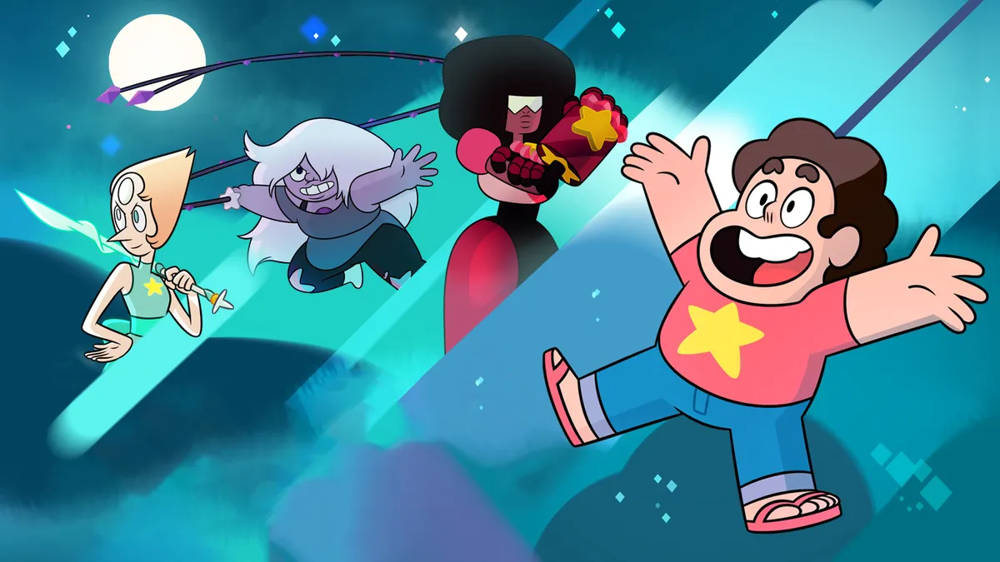

Sigue a Steven, un niño híbrido (mitad humano, mitad gema) que vive en Ciudad Playa con Garnet, Amatista y Perla, las Crystal Gems. Steven hereda una gema mágica de su madre, Rose Quartz, y aprende a usar sus poderes para proteger la Tierra de amenazas intergalácticas y de su propio pasado.
